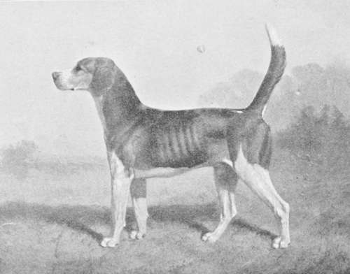

The Hound. Part 2
Description
This section is from the book "Hunting: A Manual of Fox, Hare, Stag & Otter Hunting", by J. Otho Paget. Also available from Amazon: Hunting: A Manual of Fox, Hare, Stag & Otter Hunting.
The Hound. Part 2
His head was what we should call 'snipy,' and he was decidedly on the leg. Crossed with the terriers of the period used for bolting foxes, which were either black-and-tan or red, the fox-terrier as we know him now was eventually evolved. The foot-beagle of the present day also owes many of his good qualities to this ancestor, and it is the dash that he has transmitted to his descendants which now enables a pack of twelve-inch hounds to pursue a hare to death. Amidst Yorkshire dales and Cumberland fells the fox-beagle was used for tracking the fox to his earth by shepherds and farmers, who followed the chase on foot, and who rejoiced in a kill, as much for the sport as for the safety of lamb-fold or henroost.
The author of An Essay on Hunting, published in 1733, says 'the north-country beagle is nimble and vigorous, and does his business as furiously as Jehu himself can wish him.' The same writer then tells us, ' there is yet another sort in great favour with small gentry, because they eat but little. These, as their noses are very tender and not far from the ground, I have often seen to make tolerable sport ; but without great care they are flirting and maggoty, and very apt to chant and chatter on any or on occasion.' The old dictionaries give us capricious and whimsical as the meaning of ' maggoty' : then, if we translate ' flirting' to be unsteady, uncertain, or not to be depended on, we get a very fair idea of the vices of this sort of hound. Many beagles of the present day inherit these faults, together with the tender nose. Years ago some breeder pardoned a babbling brute for the sake of its scenting powers, and that mistake has not yet been eradicated.
In attempting to sketch an outline of the foxhound's origin, I have been led to speak of the breed of hound in general; but though, as I have already stated, the blood of the buck-hound preponderates, all the other breeds have contributed something towards making that animal of which we are so justly proud. The fox-hound is a composite production, which has had its good qualities confirmed and established by generations of careful breeding.
The man who did most for hound-breeding in this century was Mr. Osbaldeston, and most packs are proud now to be able to show a pedigree that traces back to one of his strain. This brings us within the radius of the fox-hound stud-book, which work I recommend to the attention of those interested in the matter. I have already said nearly every large landed proprietor kept hounds, and hunted on his own estate or that of a friend ; but there was no definition of country as we know it now. The Bilsdale claims to be the most ancient pack in existence, and though the date of its origin is very uncertain, I think the claim has been generally allowed to be correct. Bilsdale is a picturesque valley, a cleft in the heather-clad Yorkshire hills, and it was here that hunting fox with the beagle gave them the idea of pursuing the animal in a more ambitious way. Finding the beagles too fast to be followed on foot in a straight run, they who possessed horses would ride, and then they would find the beagles too slow for the horses : thus gradually larger hounds were procured, and what at first had been merely a duty of extermination, became a most delightful and exciting pleasure. The Bilsdale hounds were a trencher-fed pack for a great many years, but I hear lately kennels have been built, and the primitive style has been abandoned.
Formerly ' Old Bob' the whip would ride down the dale on a hunting morning, blowing his horn, and at the sound, from every farmhouse one of the pack would gallop out to meet him. It was said that many of the hounds knew the hunting days, and when the days were changed, an old veteran lodging at an outlying farmstead always turned out on the original day, and finding no one at the meet, returned home much disgusted. This happened for several weeks, until at last the old hound's heart was broken, and stretching himself out on the kitchen hearth, he died a victim to change.
Fox-hunting, it will be seen, is thus a plant of gradual growth that, like some strange, forbidden weed, came up by accident amongst hare-hunting and deer-hunting, which then threatened to overshadow it, but which now it in its turn has nearly choked out of existence.
The ancient history of the hound may be interesting and perhaps instructive ; but I imagine you would like to consider the animal as we find it now. The latter half of the present century has seen a very marked improvement in the fox-hound's appearance, and the blood that is chiefly responsible for this change hails from Belvoir. No matter what kennel you may visit in the whole of England, you will find that the best-looking specimens of the pack are in some way related to hounds bred at Belvoir. Within the last thirty years the names of either Weather-gauge, Gambler, or Nominal have been a guarantee for good looks and work in their descendants. To-day Dexter is adding further laurels to the kennel, and appears likely to rival his illustrious forebears.
The merest novice amongst hounds will be struck at once on visiting Belvoir with the character and quality of the pack. At the first glance your eye fails to distinguish one hound from another: they are all of one type, yet each has an individuality of its own, which gradually comes to you as you look more closely. They have bone and strength, yet there is no lumber, and every movement denotes activity. Legs and feet are perfection; backs and loins appear made to carry muscle; and the thighs, over which the rippling sinews play, suggest a graceful strength. Generations of careful breeding have imparted to this pack a certain dignified air of calm superiority, hiding the high-strung nerves, without which all that power would be wasted. To combine strength with quality is the most difficult thing in the breeding of either horses or hounds ; but I think success has been attained in this respect by the Duke of Rutland's pack.
The Duke of Rutland's Gambler - From a Painting by Basil Nightingale
Continue to: